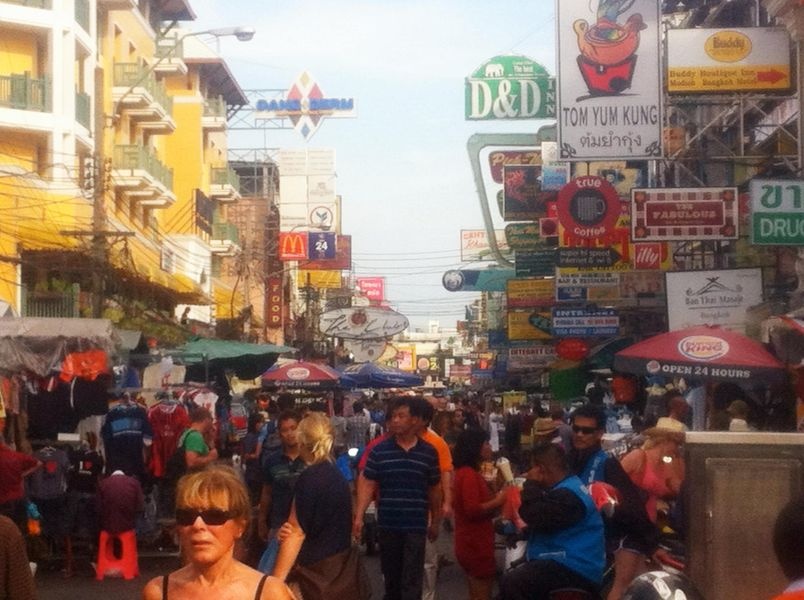

The Wonders of Khao San Road, Bangkok
Originally written March 2012

Khao San Road is the place where most travelers get their very first taste of Thailand. It is simultaneously famous and infamous, and anyone who claims even the smallest connection with the country knows the name. A brief stretch off Rama IX, Khao San is a street that leads absolutely nowhere and everywhere at the exact same time. Short by most standards, it spans a mere four blocks packed tight with bars, market stalls, cheap guesthouses, and restaurants.
Khao San could easily pass for any other commercial drag in the developing world if not for one glaring detail: it completely alters its face between daylight and darkness. During the day, the asphalt is awash with backpackers of every imaginable size, shape, and color—many of them sporting deep, aggressive tans from venturing down to Thailand's southern islands. These travelers drift along in search of cheap designer knockoffs, bargain flip-flops, and intricate Hmong handicrafts.
Naturally, a vast fleet of street food carts stands ready to offer hungry wanderers a taste of everything. The stalls churn out fresh tropical fruits, ice-cold fruit shakes, and Pad Thai—the classic noodle dish tossed with soybean sprouts, peanuts, eggs, or shrimp for a meager $1.25. You can find falafel and kebabs right alongside trays of crispy, deep-fried insects for the adventurous palate. International fast-food chains have staked their claims too, anchored by a Starbucks and two separate McDonald's locations marking either end of the drag. Much like Hong Kong, there are also dozens of quick-turn tailoring shops offering custom-cut suits fitted to your price range, most promising a full ensemble for $75, ready within twenty-four hours.
Meander a bit further and you run into endless travel agencies offering immediate bookings to anywhere in Thailand and beyond. Most pitch identical itineraries and even operate under the same generic names; the only discernable difference is that agencies employing Western staff inevitably slap a much higher premium on their tickets. And finally, my personal favorite aspect: the thriving industry of counterfeit diplomas and fake IDs. For roughly $65 upfront—without even attempting to haggle—you can walk away with a certificate credentialing you in absolutely any major or specialized field of study you name. The templates feature prestigious institutions from the University of California system to Oxford, alongside universities you’ve never heard of in your life. For a few dollars less, you can acquire international permits ranging from advanced Scuba diving certifications to commercial truck-driving licenses for the European Union. While one might naturally be skeptical of the quality, the execution is incredibly precise. It takes a highly trained eye to spot the fakes; these documents are properly embossed with official seals, complete with reflective holograms and magnetic strips that actually swipe.
When the sun goes down, the real chaos begins for anyone with stomach enough to brave it. The entire strip transforms overnight into an absolute den of excess and confusion. The daytime souvenir stalls shutter their doors, and in their place, nightlife vendors set up heavy sound systems blasting high-volume techno music directly into the street. Open-air pharmacies hang illuminated signs advertising prescription pharmaceuticals—Valium, Viagra, and Ritalin—all traded cheaply and in quantities dictated strictly by the depth of your wallet rather than the guidance of a physician. Because public drinking is entirely legal on the tarmac, intoxicated tourists abound, wandering the corridors like zombies in search of warm brains.
Two specific sub-species of nightlife regulars rule Khao San after dark: local Thai ladyboys offering a sharp wink or a playful pinch, and aggressive Tuk-Tuk drivers operating loud, three-wheeled taxis. These drivers prey almost exclusively on foreigners, demanding three or four times what a local would pay to traverse the city. While they mean no physical harm, they survive entirely on commissions and will happily pitch backpackers anything in the realm of the illegal. They introduce themselves by producing a distinct popping sound with their mouths—simulating the sound effects of a local nightclub performance—offering to drive you to a Ping Pong show. Most experienced travelers know to steer completely clear of the narcotics they offer—including weed, cocaine, and Thai crystal meth—given the catastrophic risk of being thrown into a notorious Thai prison.
The Tuk-Tuk drivers also actively broker local prostitutes, universally marketed under the promise of being a "good girl." In reality, rolling the dice on the age, safety, and legality of these arrangements is a complete crapshoot, yet many foreign tourists fall right into the trap. The primary danger involves being escorted to an isolated, mafia-run clip joint filled with hostesses where the drinks are radically overpriced. The patron is ultimately forced to settle an astronomical bar tab with their credit card or face immediate physical violence from a line of heavy Thai bodyguards or very angry ladyboys.
Of course, it isn't all dangerous territory. For the vast majority of travelers who land in Bangkok simply wanting to play it safe and have a good time, the local bars offer an excellent opportunity to unwind on a budget. Most venues serve up massive 750ml "buckets" of mixed spirits for $8.25, alongside large, ice-cold local beers for $2.50. The nightlife landscape caters to every niche: sleazy pool bars packed with hostesses, multi-story electronic dance clubs, laid-back reggae lounges, classic expat pubs, and open-air establishments featuring live bands where shouting over the music is mandatory. If you navigate the map wisely, a fantastic night out on Khao San can be wrapped up for about twelve dollars total, leaving you completely out of jail and rich with bizarre surprises.
Spend enough time observing the human traffic on Khao San, and you will eventually categorize the crowd into three distinct tribes: the sex tourists, the traditional backpackers, and the displaced luxury travelers. The sex tourists are easily the most unsettling—frequently identifiable by their wild eyes, heavy frames, and the high probability of carrying a collection of STDs as they roam the globe looking for sex workers. Most conventional travelers actively avoid them, as they almost always invite volatile trouble.
The backpackers form the baseline population. Naturally, you find those who maintain basic hygiene and those who don't. Given that Bangkok stays hovering around a humid 30°C all year round, choosing to skip a shower means you become incredibly unpleasant very quickly. You also rub shoulders with vintage hippie burnouts who have been drifting down the lane since the 1970s. These aging travelers wander aimlessly, happily trading spectacular, hazy stories of ancient acid trips and foreign drug busts from decades ago, their brains permanently altered by years of heavy exposure. Finally, you encounter the displaced upscale tourists. Because Khao San functions as an unparalleled, hyper-efficient transit hub for booking cheap travel across Southeast Asia, luxury travelers inevitably find themselves waiting around the terminal. They browse the cheap marketplace wares, consistently pay double what they should, and sip a cautious drink. For the most part, they avoid mingling with the core backpacker crowd—partly because we look borderline impoverished, and partly because we don't smell particularly fresh coming straight off a twenty-hour third-class train ride.
Ultimately, Khao San Road is a massive, high-velocity clearinghouse for human exchange. Thousands of souls rotate through the terminal every single day; what exists here at noon vanishes by midnight. It is a short, cramped strip, but the narrow alleyways fracturing off the main drag ensure that a dozen completely different worlds collide here every hour. Packed with international banks and 24-hour currency exchanges, it is an indispensable asset for any traveler setting foot in Asia. However, extended exposure to the atmosphere is highly toxic—it's wise not to linger too many days. Many purists despise the road for its blatant decadence, its shady characters, and the damp, grungy guesthouses tucked behind the bars. Others love it for its wild juxtaposition, its unmatched retail bargains, and the fact that it links seamlessly to the rest of the continent. Every raw expedition through Thailand should properly begin and end on this tarmac. After all, my Khao San and your Khao San will never be the exact same thing.